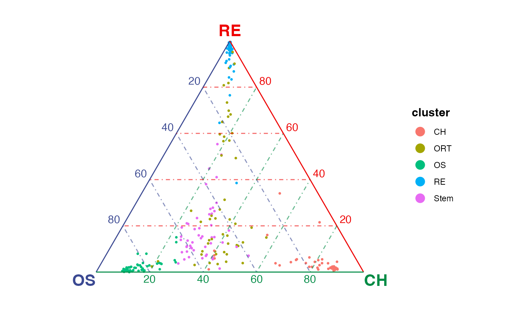

Create ternary simplex plot with SingleCellExperiment objects
Source:R/ternary.R
plotTernary.SingleCellExperiment.RdCreate ternary plots that show similarity between single cells and selected three terminals in a ternary baricentric coordinate.
Usage
# S3 method for SingleCellExperiment
plotTernary(
x,
assay.type = "counts",
clusterVar = NULL,
processed = FALSE,
dotColorBy = NULL,
legendTitle = NULL,
...
)Arguments
- x
A SingleCellExperiment object.
- assay.type
Assay to use for calculating the similarity. Default
"counts".- clusterVar
A variable name in
colData(x). DefaultNULLusescolLabels(x).- processed
Logical. Whether the input matrix is already processed.
TRUEwill bypass internal preprocessing and input matrix will be directly used for similarity calculation. DefaultFALSEand raw count input is recommended. If missing in call, usingslot = "counts"in "Seurat" method or usingassay.type = "counts"in "SingleCellExperiment" method will force this argument to beFALSEand others forTRUE.- dotColorBy
A vector/factor for coloring dots, can be either categorical (must be character or factor) or continuous. Default
NULL.- legendTitle
Title on the legend/colorbar. Default
NULLuses"cluster"ifdotColorByis missing (default); user-end variable expression ifdotColorByis directly specified from plotQuaternary.default method; variable name ifdotColorByis specified from Seurat or SingleCellExperiment method.- ...
Arguments passed on to
plotTernary.default,plotTernary.simMatverticesVector of three unique cluster names that will be used for plotting. Or a named list that groups clusters as three terminal vertices. There must not be any overlap between groups.
featuresValid matrix row subsetting index to select features for similarity calculation. Default
NULLuses all available features.byClusterDefault
NULLto generate one plot with all cells. Set"all"to split cells in plot by cluster and returns a list of subplots for each cluster as well as the plot including all cells. Otherwise, a vector of cluster names to generate a list of subplots for the specified clusters.veloGraphCell x cell
dgCMatrixobject containing velocity information. Shows velocity grid-arrow layer when specified. DefaultNULLdoes not show velocity.methodSimilarity calculation method. Default
"euclidean". Choose from"euclidean","cosine","pearson","spearman".forceWhether to force calculate the similarity when more then 500 features are detected, which is generally not recommended. Default
FALSE.sigmaGaussian kernel parameter that controls the effect of variance. Only effective when using a distance metric (i.e.
methodis"euclidian"or"cosine"). Larger values tighten the dot spreading on figure. Default0.08.scaleWhether to min-max scale the distance matrix by clusters. Default
TRUE.dotColorCharacter vector of color codes. When
dotColorByisNULL, use one or as many colors as the number of cells. IfdotColorByis categorical, specify as many colors as the number of categories indotColorByor ggplot2 categorical color palette is used by default. IfdotColorByis continuous, specify together withbreaksargument.paletteColor palette to use when
dotColorByis given. Default"D"(viridis) for continuous value and ggplot2 default for categorical value. See detail for alternatives.directionSets the order of colors in the scale. Default
1orders as palette default. If-1, the order of colors is reversed.breaksNumber of breaks for continuous color scale passed to non-interactive "plot3D::scatter3D" call. Default
NULL.returnDataLogical. Whether to return similarity and aggregated velocity data if applicable instead of generating plot. Default
FALSE.titleTitle text of the plot. Default
NULL.nGridNumber of grids along the bottom side of the equilateral triangle. Default
10.radiusArrow length of unit velocity. Lower this when arrows point outside of the coordinate. Default
0.1.dotSizeDot aesthetics passed to
geom_point. Default0.6when not interactive,4when interactive.dotShuffleWhether to shuffle the order of dots being added to the plot, useful when categorical colors are used and mixing of categories is expected. Default
NULLdoes shuffle whendotColorBygiven is categorical and does not otherwise.labelColorsColors of the axis lines and vertex labels. Default
c("#3B4992FF", "#EE0000FF", "#008B45FF")(blue, red and green)vertexLabelSizeSize of vertex labels. Default
6when not interactive,16when interactive.vertexLabelDriftPosition adjustment of the vertex labels, only applied to non-interactive view. Default
0.03.axisBreakNumber of breaks to be labeled along axis. Default
5.axisTextShowLogical, whether to show axis text. Default
TRUE.axisTextSizeSize of text along each axis break. Default
4for non-interactive view,12for interactive view.axisTextDriftPosition adjustment of the axis text, only applied to non-interactive view. Default
0.01.gridLineAlphaTransparency of background grid lines. Default
0.6.arrowLinewidthLine width of the velocity arrows. Default
0.25for non-interactive view,2for interactive view.arrowAngleControls the angle of the arrowhead, only applied to non-interactive view. Default
20.arrowLenControl length in centimetre from arrow tip to arrow tail, only applied to non-interactive view. Default
0.2.titleSizeSize of title text. Default
14for non-interactive view,20for interactive view.equilateralLogical, whether to always display the triangle as equilateral. Default
TRUE.marginMargin allowed around of the triangle plotting region when
equilateral = TRUEinteractiveLogical. Whether to display plotly interactive view. Default
FALSE.
Value
By default, a "ggplot" object when byCluster is not specified,
a list of "ggplot" object when byCluster is specified. When
interactive = TRUE, a "plotly" object is returned. When
returnData = TRUE, a list of similarity matrix and aggregated velocity
matrix is returned.
See also
Other plotTernary:
plotTernary(),
plotTernary.Seurat()
Examples
# \donttest{
# SingleCellExperiment example
library(SingleCellExperiment)
sce <- SingleCellExperiment(assays = list(counts = rnaRaw))
colLabels(sce) <- rnaCluster
gene <- selectTopFeatures(sce, vertices = c("OS", "RE", "CH"))
#> Selected 30 features for "CH".
#> Selected 30 features for "OS".
#> Selected 30 features for "RE".
plotTernary(sce, features = gene, vertices = c("OS", "RE", "CH"))

# }